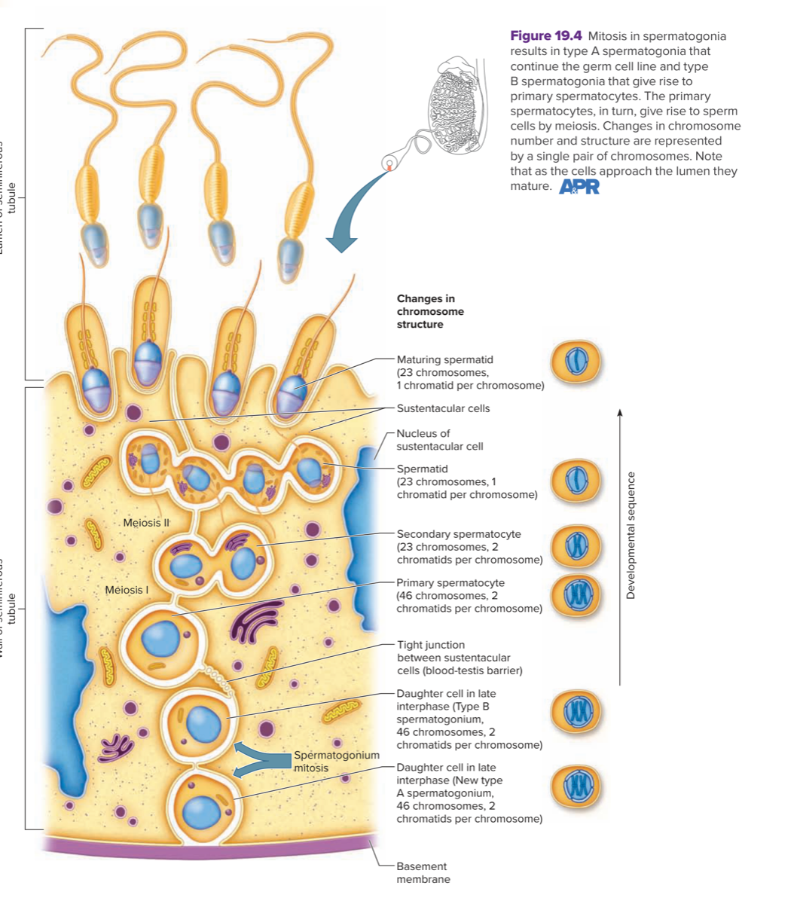

命運：維持未分化細胞的供應（maintains the supply of undifferentiated cells / continue the germ cell line）。
生物學意義：確保男性的生殖細胞幹細胞庫終身不耗竭，具備持續自我更新能力。
B 型精原母細胞 (Type B)
分化生精前驅
位置：由基底部開始向曲細精管管腔（lumen）遷移。
命運：分化成為初級精母細胞（differentiates, becoming a primary spermatocyte）。
生物學意義：正式進入精子生成發育途徑，穿過血睪屏障並進行第一次減數分裂。
圖 19.4 精原母細胞的有絲分裂與 A/B 型分岔（Hole 15e）

原文圖說：Mitosis in spermatogonia results in type A spermatogonia that continue the germ cell line and type B spermatogonia that give rise to primary spermatocytes. The primary spermatocytes, in turn, give rise to sperm cells by meiosis. Changes in chromosome number and structure are represented by a single pair of chromosomes. Note that as the cells approach the lumen they mature.
視覺解析：圖示展示曲細精管壁的縱切面。基底膜處貼著精原母細胞進行有絲分裂，產生一個新的 A 型精原母細胞（留在基底膜，46 條染色體、2 條染色分體）與一個 B 型精原母細胞（46 條染色體）。隨後沿著「發育順序」箭頭向管腔推進，依序分化為初級精母細胞 → 次級精母細胞 → 精細胞 → 成熟精細胞。柱狀的支持細胞（Sertoli cells）以緊密連接形成血睪屏障（blood-testis barrier）全程包覆。
二、曲細精管內的三大細胞空間分工
細胞名稱 (中英對照)
解剖分佈位置
核心生理功能
染色體套數與狀態
精原細胞 Spermatogenic cells
曲細精管複層上皮基底部，貼近基底膜
生殖幹細胞；經有絲分裂增生並分化產生各級精母細胞與精子
二倍體（2n = 46，23 對）
支持細胞 (塞托利氏細胞) Sustentacular / Sertoli cells
貫穿曲細精管全壁厚度，由基底膜直達管腔
① 支持、滋養與調節精原細胞 ② 緊密連接構成血睪屏障 ③ 分泌抑制素（inhibin）負回饋抑制 FSH
"In the male embryo, an undifferentiated spermatogenic cell is called spermatogonium. Each spermatogonium contains 46 chromosomes (23 pairs) in its nucleus, the usual number for human body cells. Beginning during embryonic development, hormones stimulate spermatogonia to undergo mitosis. Each cell division gives rise to two new cells, one of which (type A) maintains the supply of undifferentiated cells, the other of which (type B) differentiates, becoming a primary spermatocyte. Sperm cell production, or spermatogenesis, pauses at this stage."
"At puberty, mitosis resumes, and new spermatogonia form. Testosterone secretion increases and the primary spermatocytes then reproduce by a special type of cell division called meiosis. Meiosis includes two successive divisions, called the first and second meiotic divisions."
"The epithelium of the seminiferous tubules consists of sustentacular cells (Sertoli cells) and spermatogenic cells. Sustentacular cells support, nourish, and regulate the spermatogenic cells... Then, in the presence of FSH and testosterone, sustentacular cells stimulate the spermatogenic cells to undergo spermatogenesis, giving rise to sperm cells."